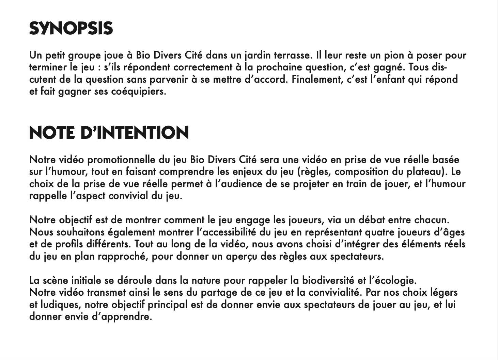
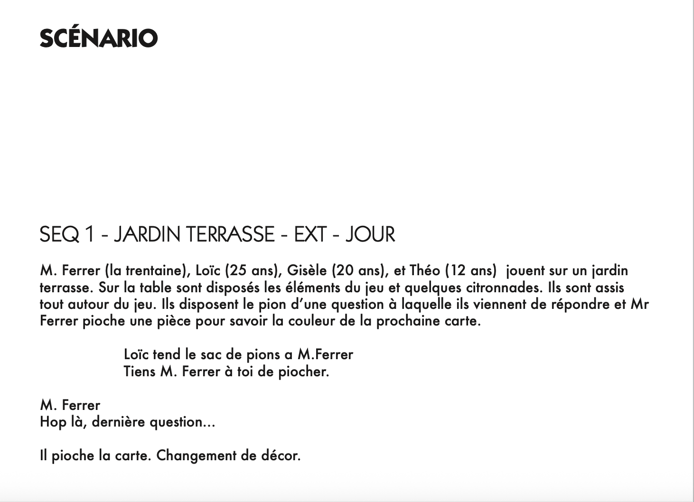
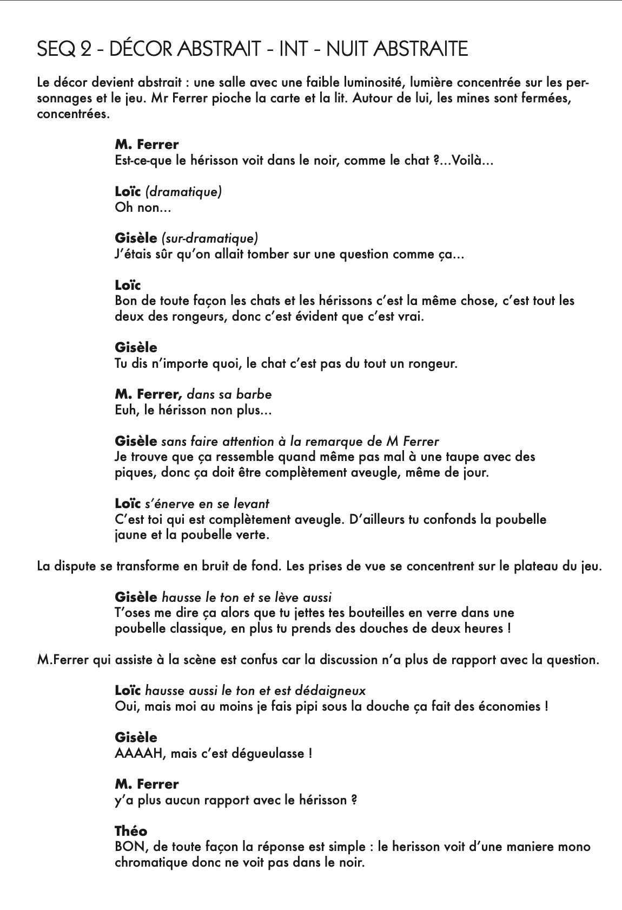
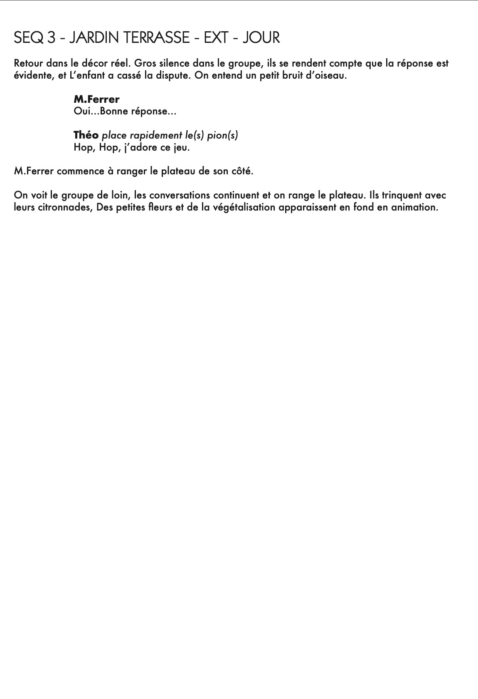
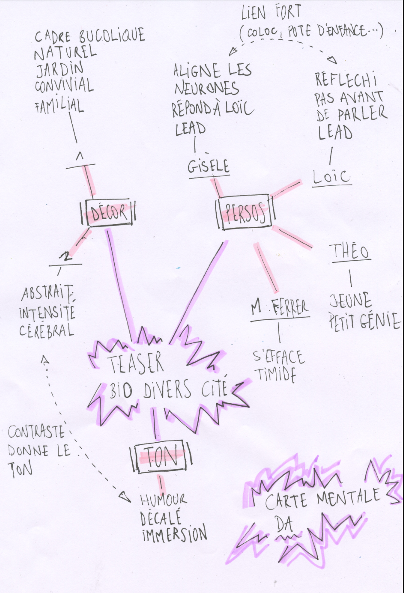
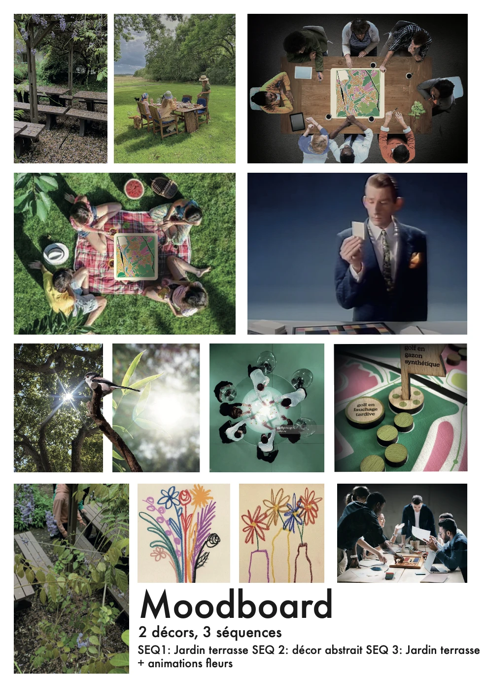

BIO DIVER CITÉ
Vidéo promotionnelle, Rédaction, Réalisation
Client : Éditions Adventices
Lieu : L'Initiative Paris
Les éditions Adventices ont conçu « Bio Diver Cité », un jeu dont l'objectif est de sensibiliser à l'harmonie entre l'humain et le végétal au cœur de la ville. Pour accompagner la sortie du jeu, l'enjeu était de réaliser une vidéo promotionnelle capable de transmettre les valeurs de cohabitation portées par l'éditeur.
L'intention était de mettre en avant la dynamique de débat et d'engagement. La réalisation intègre des plans rapprochés sur les éléments du plateau, permettant au spectateur de comprendre les règles tout en s'imprégnant de l'univers graphique du projet.
Le travail préparatoire a nécessité une phase intense de scénarisation et de découpage technique. L'enjeu était de traduire un concept pédagogique en une narration visuelle fluide et engageante.
Ces documents (synopsis, scénario, cartes mentales) retracent la genèse du projet vidéo, depuis la structuration des intentions jusqu'à l'organisation du tournage, assurant ainsi la cohérence entre le message environnemental et le rendu visuel final.





